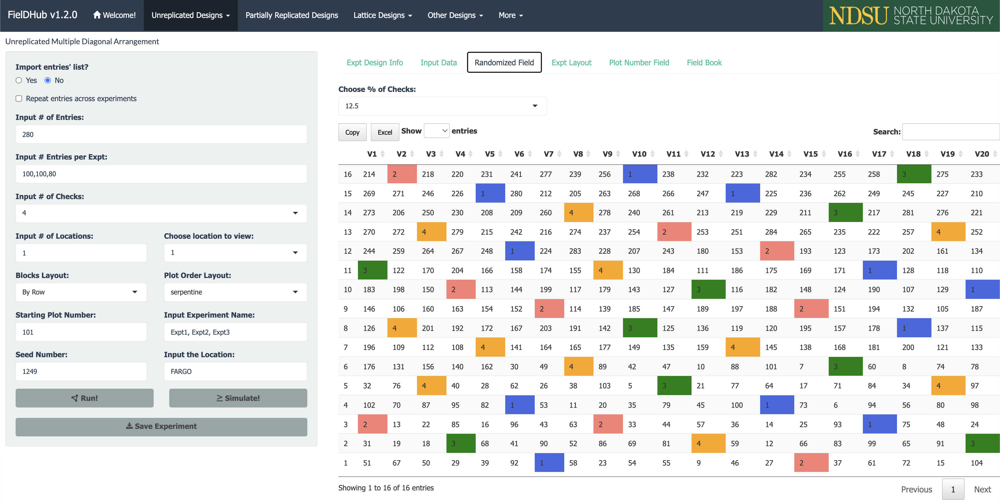
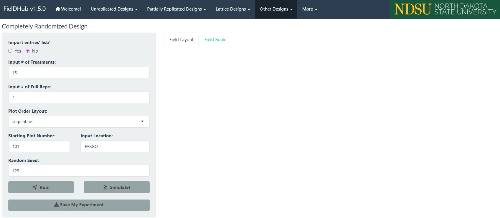
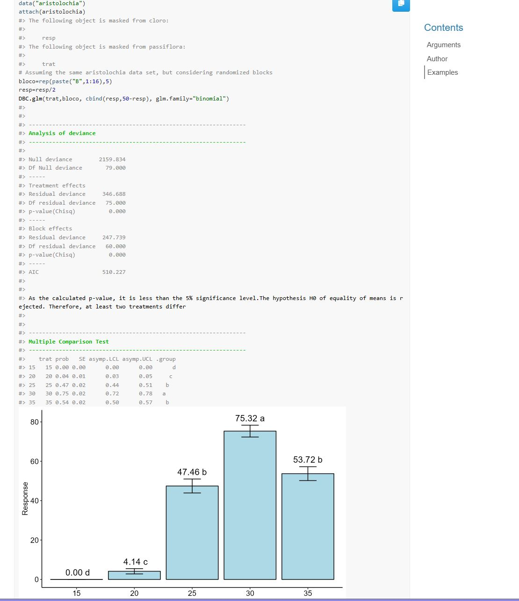
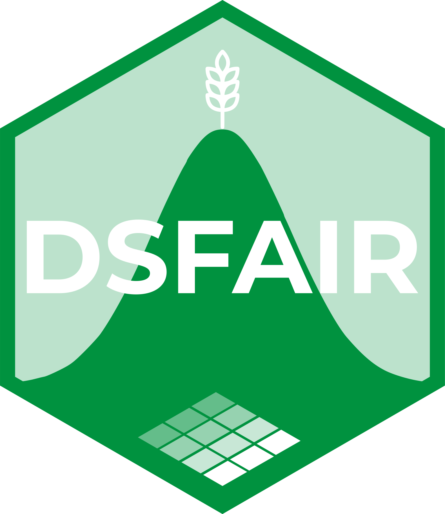
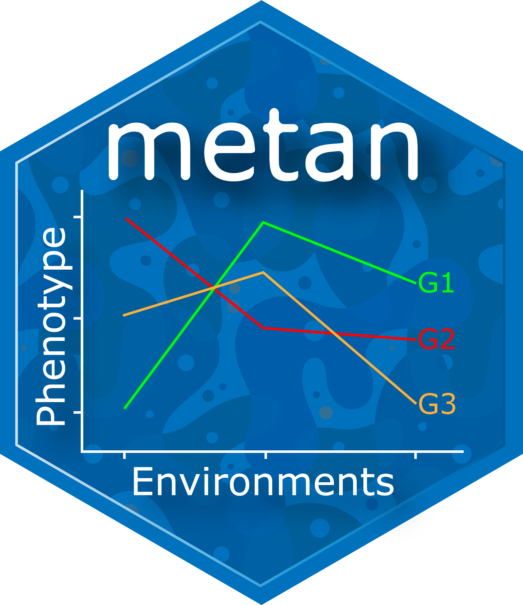
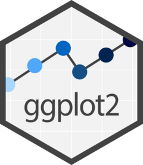

Aula 19 . Pacotes R para Experimentação Agrícola
Ferramentas estatísticas para análise de experimentos.
Acompanhe o Café com R

Printa a tela e escaneia o QR Code.
EM BREVE - NO YOUTUBE

Inscreva-se já no Link.
Visão geral
Os 14 pacotes desta aula
| Categoria | Pacotes |
|---|---|
| Planejamento experimental | FielDHub |
| Análise clássica | AgroR, ExpDes.pt, dsfair, agricolae |
| Modelos mistos | lme4, nlme |
| Diagnóstico e inferência | DHARMa, emmeans, multcomp, car |
| Ensaios multi-ambientais | metan |
| Ferramentas gerais | MASS, ggplot2 |
Pipeline de análise
Planejamento Coleta Análise
FielDHub → dados → AgroR / ExpDes.pt
lme4 / nlme
Diagnóstico Inferência Comunicação
DHARMa → emmeans → ggplot2
car multcomp QuartoGuia rápido de seleção
| Situação | Pacote indicado |
|---|---|
| Planejar layout de campo | FielDHub |
| DIC ou DBC simples | AgroR ou ExpDes.pt |
| Fatorial com muitos níveis | ExpDes.pt |
| Efeitos aleatórios presentes | lme4 |
| Diagnóstico de resíduos | DHARMa |
| Médias ajustadas e contrastes | emmeans |
| Comparações múltiplas | multcomp |
| Dados desbalanceados | car |
| Ensaios multi-ambientais | metan |
| Testes clássicos (Tukey, Scott-Knott) | agricolae |
Referências avançadas
Dois pacotes voltados para melhoramento genético e estruturas de covariância complexas são citados como referência:
ASReml-R: padrão da indústria para modelos mistos em melhoramento genético. Software pago com licença acadêmica disponível. Documentação em vsni.co.uksommer: alternativa gratuita ao ASReml-R. Ajusta modelos mistos com estruturas de covariância para dados de melhoramento genético. Documentação em CRAN sommer
FielDHub
O que é
FielDHubé um pacote com aplicativo Shiny interativo para geração de delineamentos experimentais.Suporta delineamentos tradicionais e avançados com visualização do layout de campo.

Funções principais
| Função | Descrição |
|---|---|
run_app() |
Abre interface Shiny interativa |
RCBD() |
Delineamento em blocos casualizados |
CRD() |
Delineamento inteiramente casualizado |
partially_replicated() |
Delineamento p-rep |
diagonal_arrangement() |
Arranjo diagonal com testemunhas |
Documentação: didiermurillof.github.io/FielDHub
Exemplo mínimo - rodando app Shiny

Dica
Run the Shiny Application
library (FielDHub)
run_app ()
Exemplo mínimo
Output
ID PLOT REP TREATMENT
1 1 101 1 T6
2 2 102 1 T3
3 3 103 1 T9Dica
O método plot() gera a visualização do layout de campo com numeração de parcelas e identificação dos tratamentos por cor.
AgroR
O que é
AgroRé um pacote integrado para análise de experimentos agrícolas com funções para:DIC, DBC, DQL, fatoriais e parcelas subdivididas, incluindo testes de comparação de médias e gráficos prontos para publicação.
Documentação: agronomiar.github.io/AgroR_package
Funções principais
| Função | Descrição |
|---|---|
DIC() |
Delineamento inteiramente casualizado |
DBC() |
Delineamento em blocos casualizados |
DQL() |
Delineamento quadrado latino |
FAT2DBC() |
Fatorial duplo em DBC |
PSUBDBC() |
Parcelas subdivididas em DBC |
Exemplo mínimo
Exemplos completos no site
Output
Análise de variância
CV(%): 8.42 QMresiduo: 12.34
Teste de Tukey (5%)
varieties media grupo
V3 62.4 a
V1 58.7 ab
V2 55.1 bDica
O AgroR gera automaticamente o teste de normalidade de Shapiro-Wilk e o teste de homogeneidade de Bartlett antes da ANOVA.
Output

ExpDes.pt
O que é
ExpDes.pté um pacote com interface completamente em português para análise de DIC, DBC, DQL e experimentos fatoriais com até quatro fatores, incluindo análise de regressão para fatores quantitativos.
Documentação: CRAN ExpDes.pt
Funções principais
| Função | Descrição |
|---|---|
dic() |
DIC com testes de médias |
dbc() |
DBC com testes de médias |
fat2.dbc() |
Fatorial duplo em DBC |
fat3.dbc() |
Fatorial triplo em DBC |
psub2.dbc() |
Parcelas subdivididas em DBC |
Exemplo mínimo
Output
Quadro da análise de variância
CV(%): 9.21
Teste de Tukey a 5% de probabilidade
Tratamentos com médias seguidas de mesma letra não diferem entre si.Dica
O ExpDes.pt é especialmente indicado para quem está aprendendo análise de experimentos, pois todas as saídas são em português e o código é direto.
dsfair

O que é
dsfairnão é um pacote no sentido tradicional.É um portal de tutoriais estruturados para análise de dados experimentais usando
lme4,emmeansemultcompcom boas práticas estatísticas e código reprodutível.
Documentação: schmidtpaul.github.io/dsfair_quarto
Dica
O dsfair é um recurso de referência para quem quer aprender a estrutura correta de análise com modelos mistos, com exemplos reais e código limpo para cada tipo de experimento.
Abordagem do dsfair
A metodologia do dsfair segue o pipeline:
- Ajuste do modelo com
lme4 - Verificação dos pressupostos com gráficos de resíduos
- Médias marginais com
emmeans - Comparações com
multcomp - Visualização com
ggplot2
agricolae
O que é
agricolaeé um pacote clássico em agronomia com funções para testes de comparação de médias, análise de estabilidade, análise de trilha e planejamento de experimentos. Muito citado em artigos brasileiros da área.
Documentação: CRAN agricolae
Funções principais
| Função | Descrição |
|---|---|
HSD.test() |
Teste de Tukey (HSD) |
duncan.test() |
Teste de Duncan |
SNK.test() |
Teste de Student-Newman-Keuls |
LSD.test() |
Teste de Fisher (LSD) |
kruskal() |
Teste não paramétrico de Kruskal-Wallis |
stability.par() |
Análise de estabilidade de Eberhart e Russell |
Exemplo mínimo
Output
Grupos de Tukey (5%)
tratamento média grupo
dose_alta 3650 a
dose_media 3520 ab
dose_baixa 3350 b
controle 3200 cDica
O agricolae também calcula o teste de Scott-Knott via o pacote ScottKnott, muito utilizado no Brasil para agrupamento de médias em grandes experimentos.
lme4
O que é
lme4é o pacote de referência para ajuste de modelos lineares mistos e modelos lineares mistos generalizados em R.Suporta estruturas hierárquicas, medidas repetidas e dados desbalanceados.
Documentação: CRAN lme4
Funções principais
| Função | Descrição |
|---|---|
lmer() |
Modelo linear misto (LMM) |
glmer() |
Modelo linear misto generalizado (GLMM) |
fixef() |
Extrai efeitos fixos |
ranef() |
Extrai efeitos aleatórios |
VarCorr() |
Componentes de variância |
Sintaxe de efeitos aleatórios
| Sintaxe | Significado |
|---|---|
(1\|bloco) |
Intercepto aleatório por bloco |
(1\|local/bloco) |
Bloco aninhado em local |
(tempo\|parcela) |
Inclinação e intercepto aleatórios |
Exemplo mínimo
Output
Fixed effects:
Estimate Std. Error
(Intercept) 3200.4 45.2
tratamentodose_baixa 150.3 38.1
Random effects:
Groups Variance Std.Dev.
bloco 812.4 28.5Importante
No lme4, efeitos fixos são os preditores de interesse direto (tratamento, dose, tempo). Efeitos aleatórios são fontes de variação amostradas de uma população maior (bloco, localidade, ano).
nlme
O que é
nlmeé um pacote para modelos lineares mistos com suporte a estruturas de correlação serial e modelagem de heterocedasticidade.Indicado quando há medidas repetidas com correlação no tempo ou espaço.
Documentação: CRAN nlme
Funções principais
| Função | Descrição |
|---|---|
lme() |
Modelo linear misto |
corAR1() |
Estrutura de correlação AR(1) |
corExp() |
Correlação exponencial espacial |
varIdent() |
Variância heterogênea por grupo |
intervals() |
Intervalos de confiança dos parâmetros |
Exemplo mínimo
Output
Correlation structure: AR(1)
Parameter estimate: 0.73
Fixed effects: altura ~ dias + tratamento
Value Std.Error
(Intercept) 12.4 0.84
dias 0.38 0.02lme4 x nlme: quando usar cada um
| Situação | Pacote |
|---|---|
| Estrutura hierárquica simples | lme4 |
| GLMM (Poisson, Binomial, Beta) | lme4 |
| Correlação serial no tempo | nlme |
| Correlação espacial entre parcelas | nlme |
| Variância heterogênea entre grupos | nlme |
| Dados desbalanceados | lme4 |
DHARMa
O que é
DHARMaé um pacote para diagnóstico de resíduos em modelos hierárquicos (mistos) por simulação.Gera resíduos quantílicos padronizados que devem seguir distribuição uniforme em [0, 1] quando o modelo está corretamente especificado.
Documentação: florianhartig.github.io/DHARMa
Funções principais
| Função | Descrição |
|---|---|
simulateResiduals() |
Simula resíduos do modelo |
plot() |
QQ-plot e resíduos vs ajustados |
testDispersion() |
Testa sobre e subdispersão |
testZeroInflation() |
Testa excesso de zeros |
testSpatialAutocorrelation() |
Testa autocorrelação espacial |
Exemplo mínimo
Output
Dica
O plot() gera dois painéis: o QQ-plot dos resíduos simulados (deve ter pontos próximos à diagonal) e o gráfico de resíduos versus valores ajustados (deve ser uniforme sem padrões). Desvios indicam má especificação do modelo.
DHARMa nonparametric dispersion test
dispersion = 1.02, p-value = 0.84Importante
O DHARMa é compatível com lme4, glmmTMB, glm e outros modelos. É o método recomendado para diagnóstico de resíduos em GLMMs, pois resíduos brutos não seguem distribuição uniforme mesmo quando o modelo está correto.
emmeans
O que é
emmeanscalcula médias marginais estimadas (EMMs), também conhecidas como médias ajustadas ou médias dos mínimos quadrados, a partir de modelos ajustados.Permite contrastes, comparações pareadas e intervalos de confiança.
Documentação: rvlenth.github.io/emmeans
Funções principais
| Função | Descrição |
|---|---|
emmeans() |
Calcula médias marginais estimadas |
contrast() |
Define e testa contrastes |
pairs() |
Comparações pareadas entre médias |
cld() |
Agrupamento de médias com letras |
plot() |
Visualização das médias com IC |
Exemplo mínimo
Output
tratamento emmean SE lower.CL upper.CL
controle 3200 42 3117 3283
dose_baixa 3350 42 3267 3433
dose_media 3520 42 3437 3603
dose_alta 3650 42 3567 3733Dica
As médias marginais do emmeans controlam os efeitos de bloco e covariáveis, sendo comparações mais precisas do que as médias brutas calculadas diretamente dos dados.
multcomp
O que é
multcomprealiza comparações múltiplas e testes simultâneos após ajuste de modelos lineares e mistos.Controla o erro tipo I inflado quando múltiplas comparações são feitas ao mesmo tempo.
Documentação: CRAN multcomp
Funções principais
| Função | Descrição |
|---|---|
glht() |
Hipóteses lineares gerais |
mcp() |
Define comparações múltiplas |
summary() |
Resultados com p-valores ajustados |
confint() |
Intervalos de confiança ajustados |
cld() |
Agrupamento com letras |
Métodos de ajuste disponíveis
| Método | Quando usar |
|---|---|
"tukey" |
Todas as comparações pareadas |
"dunnett" |
Comparações somente contra o controle |
"bonferroni" |
Conservador, qualquer conjunto de hipóteses |
"holm" |
Alternativa ao Bonferroni, menos conservadora |
Exemplo mínimo
Output
Linear Hypotheses (Tukey):
Estimate p value
dose_baixa - controle 150.3 0.002 **
dose_media - controle 320.1 <0.001 ***
dose_alta - controle 450.2 <0.001 ***
dose_media - dose_baixa 169.8 0.001 **Dica
Use cld(comparacoes, Letters = letters) para obter o agrupamento de médias com letras para incluir em tabelas de resultados.
car
O que é
car(Companion to Applied Regression) fornece funções para ANOVA do tipo III, testes de hipóteses, diagnóstico de modelos e transformações.É essencial quando os dados são desbalanceados e a ANOVA padrão produz resultados incorretos.
Documentação: CRAN car
Funções principais
| Função | Descrição |
|---|---|
Anova() |
ANOVA tipo II e III |
leveneTest() |
Teste de homogeneidade de variâncias |
outlierTest() |
Teste de Bonferroni para outliers |
vif() |
Fator de inflação da variância |
powerTransform() |
Transformações Box-Cox generalizadas |
Por que ANOVA tipo III
Em experimentos balanceados, os tipos I, II e III produzem o mesmo resultado.
Em dados desbalanceados (parcelas perdidas, observações faltantes), apenas o tipo III é correto pois testa cada efeito controlando todos os demais.
Output
Analysis of Deviance Table (Type III Wald chisquare tests)
Chisq Df Pr(>Chisq)
(Intercept) 845.2 1 <0.001 ***
tratamento 38.4 3 <0.001 ***
tempo 22.1 2 <0.001 ***
tratamento:tempo 8.3 6 0.216Importante
Sempre use Anova() do pacote car com tipo III quando o experimento tiver dados desbalanceados. A função anova() do R base usa tipo I por padrão, o que produz resultados dependentes da ordem dos termos no modelo.
metan

O que é
metané um pacote para análise de ensaios multi-ambientais com mais de 20 métodos de estabilidade, análise AMMI, GGE Biplot, seleção multi-característica e integração comtidyverse.
Documentação: tiagoolivoto.github.io/metan
Funções principais
| Função | Descrição |
|---|---|
performs_ammi() |
Análise AMMI |
gge() |
GGE Biplot |
waasb() |
Estabilidade baseada em BLUP |
ge_stats() |
Múltiplos índices de estabilidade |
mtsi() |
Índice de seleção multi-característica |
Exemplo mínimo: AMMI
Output AMMI
Dica
O type = 1 gera o biplot AMMI1 com a média dos genótipos no eixo x e o primeiro componente de interação (IPC1) no eixo y. Genótipos próximos ao eixo x têm comportamento mais estável.
Exemplo mínimo: índices de estabilidade
Output ge_stats
Genótipo Wricke Shukla Lin_Binns
G1 8.42 6.31 12.4
G2 3.21 2.18 5.8
G3 15.67 11.23 22.1Dica
O ge_stats() calcula simultaneamente mais de 20 índices de estabilidade. Use which para especificar a variável quando o modelo tiver múltiplas respostas.
MASS
O que é
MASS(Modern Applied Statistics with S) é um pacote com ferramentas estatísticas gerais incluindo regressão robusta, seleção de modelos por AIC, transformações Box-Cox e GLMs com distribuição binomial negativa.
Documentação: CRAN MASS
Funções principais
| Função | Descrição |
|---|---|
stepAIC() |
Seleção de variáveis por AIC |
boxcox() |
Transformação Box-Cox |
rlm() |
Regressão linear robusta |
glm.nb() |
GLM com binomial negativa |
lda() |
Análise discriminante linear |
Exemplo mínimo: seleção de modelo
Output stepAIC
Step: AIC = 284.3
producao ~ N + K + N:K
Coefficients:
Estimate Std.Error
(Intercept) 3100.2 42.1
N 85.4 12.3
K 62.1 10.8
N:K 18.7 4.2Exemplo mínimo: Box-Cox
Dica
O gráfico do boxcox() mostra o intervalo de confiança para o parâmetro lambda. Se o intervalo incluir lambda = 1, não é necessária transformação. Se incluir lambda = 0, use transformação logarítmica.
ggplot2

O que é
ggplot2é o pacote de visualização de dados do tidyverse.Em experimentação agrícola, é usado para criar gráficos de barras com letras de comparação, boxplots por tratamento, gráficos de médias com intervalos de confiança e biplots.
Documentação: ggplot2.tidyverse.org
Gráfico de médias com IC
library(ggplot2)
library(emmeans)
medias_df <- as.data.frame(
emmeans(modelo, ~ tratamento, type = "response"))
ggplot(medias_df, aes(x = tratamento, y = emmean, fill = tratamento)) +
geom_col(alpha = 0.85, width = 0.6) +
geom_errorbar(aes(ymin = lower.CL, ymax = upper.CL),
width = 0.2, linewidth = 0.7) +
scale_fill_manual(values = c("#224573", "#6B4F4F", "#4A6FA5", "#E5D3B3")) +
labs(x = "Tratamento", y = "Produtividade estimada (kg/ha)") +
theme_classic(base_size = 13) +
theme(legend.position = "none")Boxplot por tratamento
ggplot(dados, aes(x = tratamento, y = producao, fill = tratamento)) +
geom_boxplot(alpha = 0.85, outlier.size = 1.5) +
scale_fill_manual(values = c("#224573", "#6B4F4F", "#4A6FA5", "#E5D3B3")) +
labs(x = "Tratamento", y = "Produtividade (kg/ha)") +
theme_classic(base_size = 13) +
theme(legend.position = "none",
axis.text.x = element_text(angle = 20, hjust = 1))Dica
Use sempre theme_classic() para gráficos de artigos científicos. O fundo branco sem grid facilita a leitura e atende aos padrões da maioria dos periódicos.
Boas práticas
Checklist pré-análise
Antes de rodar qualquer modelo, confirme:
- Os dados estão organizados em formato tidy (uma linha por observação)
- As variáveis categóricas estão como
factorcom níveis na ordem correta - Os efeitos fixos e aleatórios estão corretamente identificados
- Não há valores ausentes não tratados
- O delineamento experimental está claramente documentado
Verificação dos pressupostos
Dados faltantes
- Modelos mistos com
lme4são robustos a dados desbalanceados e tratam dados faltantes de forma automática, diferente da ANOVA clássica que exige dados completos.
# lme4: roda normalmente com NA
modelo <- lmer(producao ~ tratamento + (1|bloco), data = dados)
# ANOVA clássica: precisa remover NA antes
dados_limpo <- na.omit(dados)
modelo_aov <- aov(producao ~ tratamento + bloco, data = dados_limpo)Importante
Nunca remova observações com dados faltantes sem justificativa. Documente sempre o motivo da ausência e avalie se o padrão de missing é aleatório ou sistemático antes de decidir como tratar.
Fluxograma de decisão
Efeitos aleatórios presentes?
|
|- NAO: Experimento simples?
| |- SIM: AgroR ou ExpDes.pt
| |- NAO: Fatorial complexo?
| |- SIM: ExpDes.pt
| |- NAO: lm() + car + multcomp
|
|- SIM: Multi-ambiental?
|- SIM: metan
|- NAO: lme4 + DHARMa + emmeans + multcompInstalação
Instalar todos os pacotes
Carregar os pacotes
Acompanhe o Café com R
Printa a tela e escaneia o QR Code.
EM BREVE - NO YOUTUBE
Inscreva-se já no Link.
Jennifer Lopes | Café com R | Pacotes R para Experimentação Agrícola